HƯỚNG DẪN
Tạo chứng từ số hoá sử dụng ECUS.AI
Cách này cũng gần giống với cách 1 đã hướng dẫn ở trên, có sử dụng chức năng phân tích và tạo chứng từ số hóa tự động bằng ECUS.AI.
Bước 1: Chọn hồ sơ nhập khẩu hoặc xuất khẩu.
Ở cách 1, hệ thống dựa vào thông tin trên chứng từ để tự động xác định loại hình hồ sơ là nhập khẩu hoặc xuất khẩu thì ở cách này, người khai tự xác định và lựa chọn bằng cách vào menu Hồ sơ hải quan / chọn Thêm mới hồ sơ nhập khẩu (hoặc xuất khẩu):
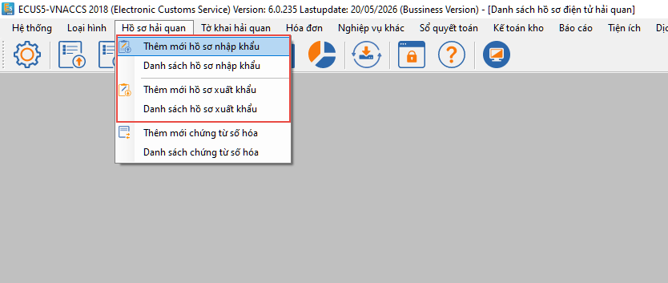
Bước 2: Chọn và đính kèm file chứng từ cho hồ sơ
Tại màn hình chức năng của hồ sơ, người khai tiến hành chọn để đính kèm các file chứng từ tương ứng:
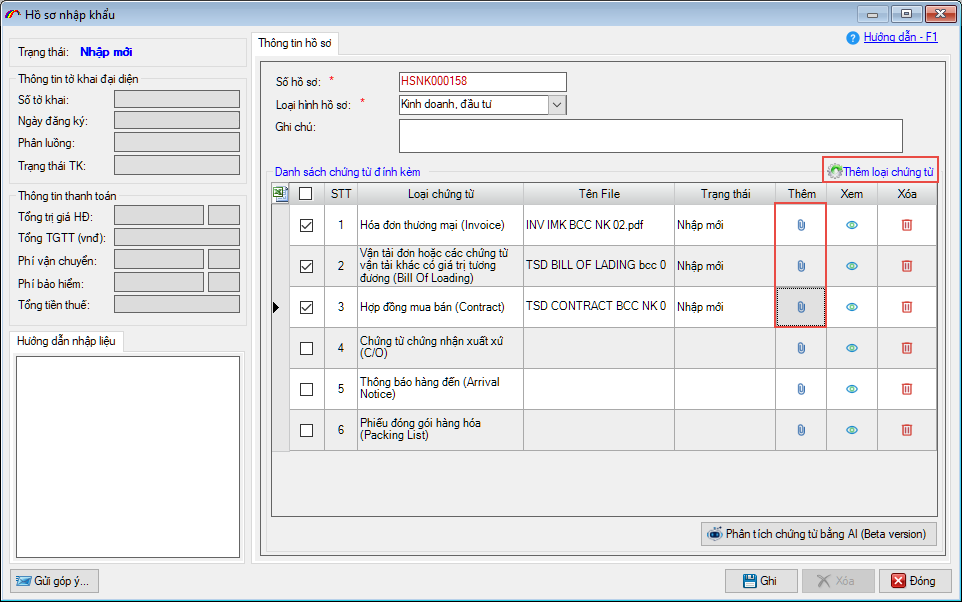
Các chứng từ trên form đang được phần mềm thiết lập mặc định theo các chứng từ thường có cho mỗi loại hình đã chọn, người khai có thể chọn thêm các chứng từ khác bằng cách nhấn vào nút Thêm loại chứng từ để chọn:
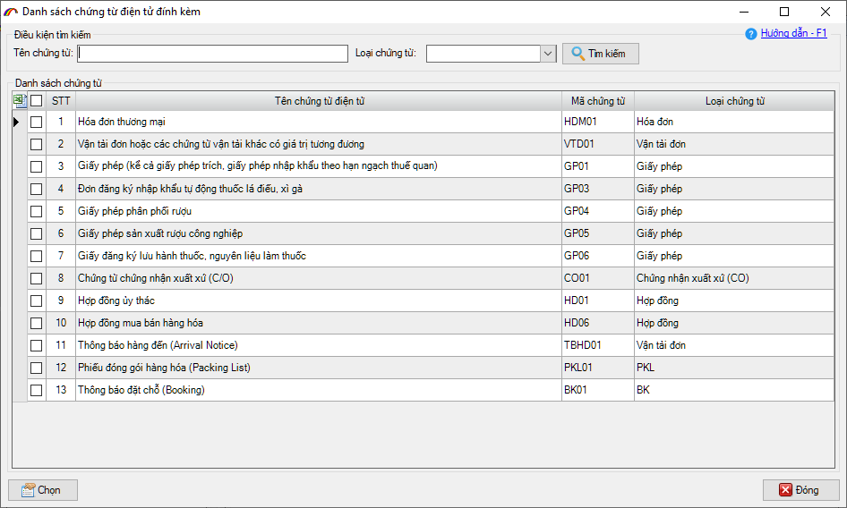
Bước 3: ECUS.AI thực hiện phân tích chứng từ
Sau khi đính kèm file chứng từ cho hồ sơ, người khai nhấn nút Phân tích chứng từ bằng AI, để ECUS.AI tiến hành phân tích chứng từ:
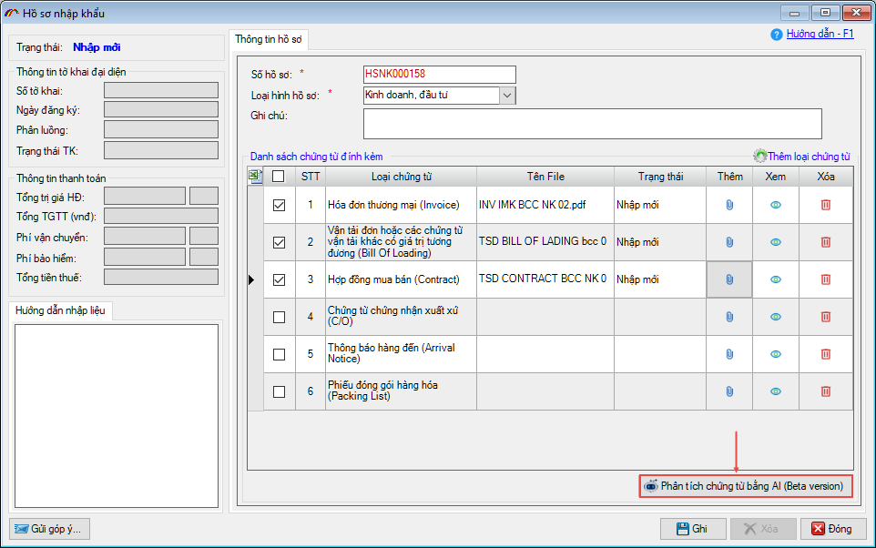
Lưu ý: Khi thực hiện phân tích chứng từ, người khai đã phải có tài khoản sử dụng dịch vụ ECUS.AI để đăng nhập hệ thống. Trường hợp chưa có tài khoản, người khai có thể dùng thử 7 ngày bằng cách tích chọn vào Sử dụng tài khoản dùng thử (7 ngày) phần mềm sẽ tự động điền thông tin tài khoản, mật khẩu dùng thử, bạn nhấn nút Đăng nhập để đăng nhập hệ thống:
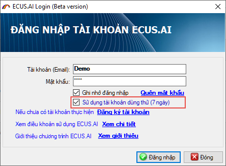
Quá trình phân tích hoàn toàn tự động và nhanh chóng, bạn chỉ việc chờ cho đến khi quá trình phân tích kết thúc:
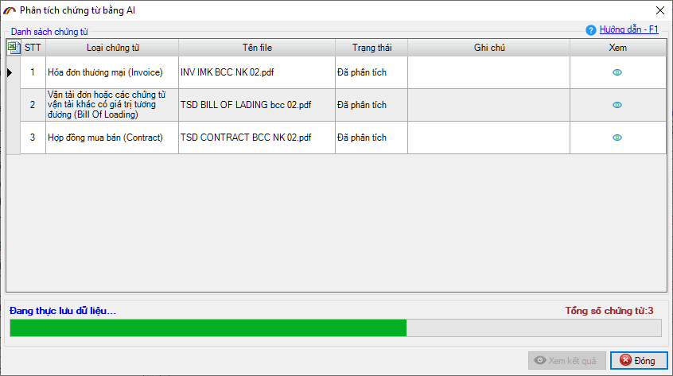
Bước 4: Kiểm tra kết quả và tạo tờ khai kèm chứng từ số hóa
Sau khi phân tích thành công, các tiêu chí trên chứng từ được phần mềm số hóa và đưa vào các chỉ tiêu tương ứng của tờ khai, danh sách hàng hóa.
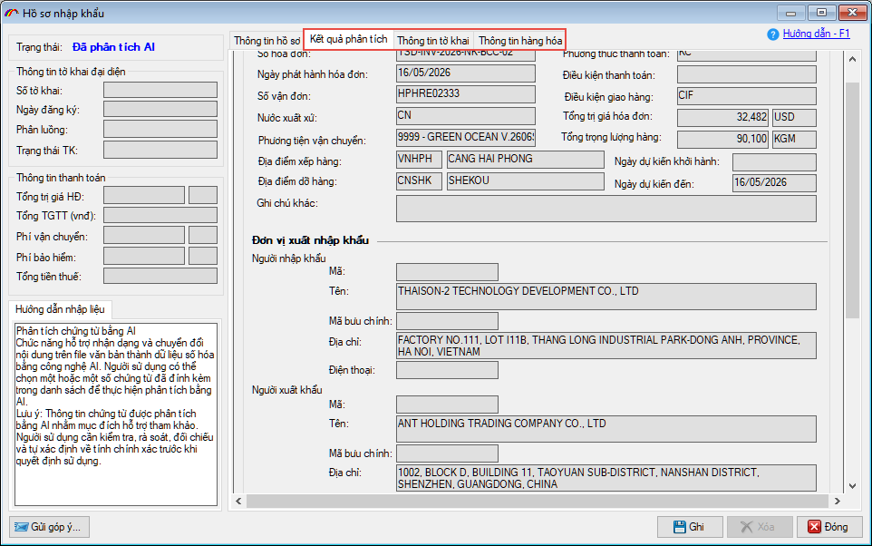
Người khai tiến hành kiểm tra, đối chiếu kết quả với chứng từ gốc một cách trực quan bằng cách nhấn vào biểu tượng con mắt tại cột Xem trong danh sách chứng từ ở tab Kết quả phân tích:
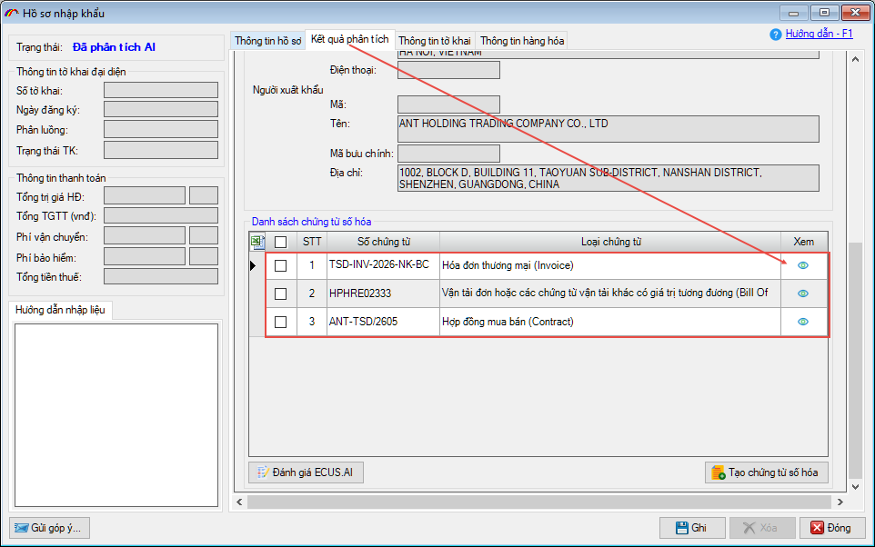
Tại tab Kết quả xử lý, người khai có thể tạo các chứng từ số hóa bằng cách đánh dấu tích chọn và nhấn nút Tạo chứng từ số hóa:
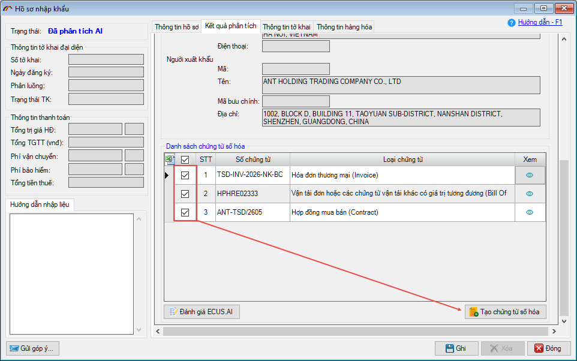
Hoặc tạo tờ khai Hải quan kèm chứng từ số hóa từ các thông tin kết quả phân tích bằng cách chuyển sang tab Thông tin tờ khai:
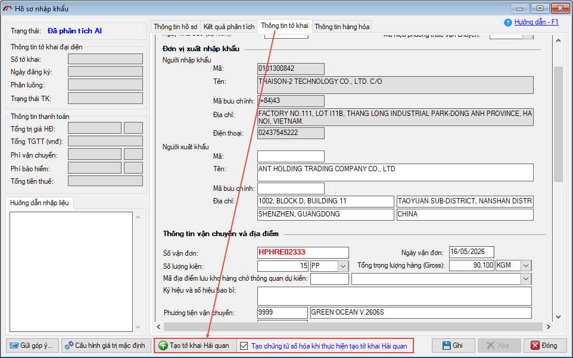
Chứng từ số hóa được tạo, tạo kèm tờ khai sẽ hiển thị tại tab Quản lý tờ khai / Danh sách chứng từ số hóa:
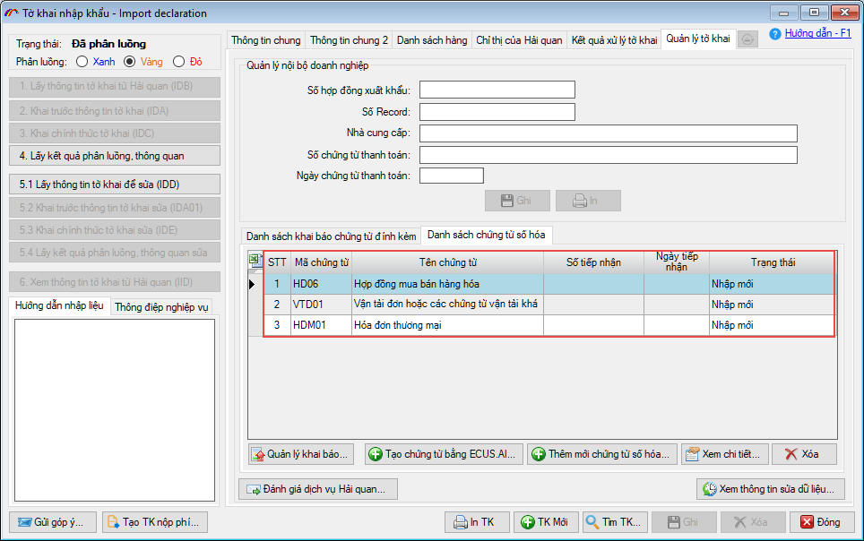
Bạn nhấn đúp chuột vào các chứng từ trong danh sách để xem chi tiết.